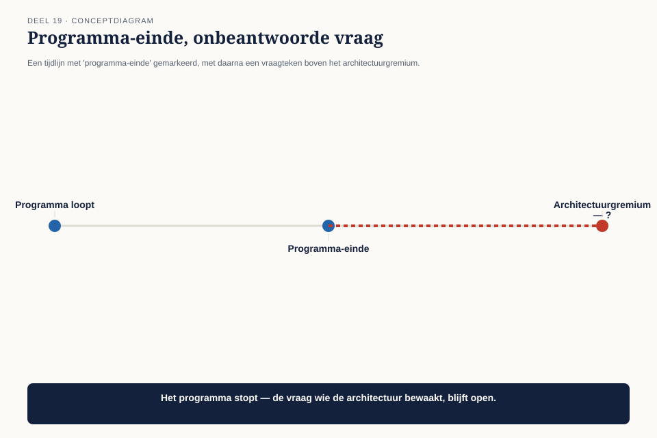
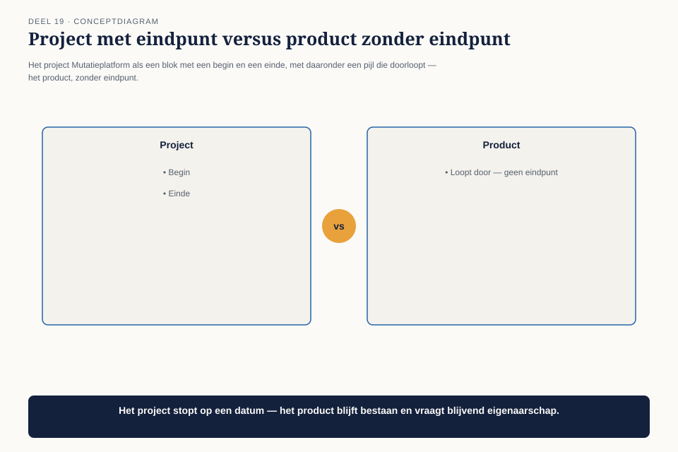
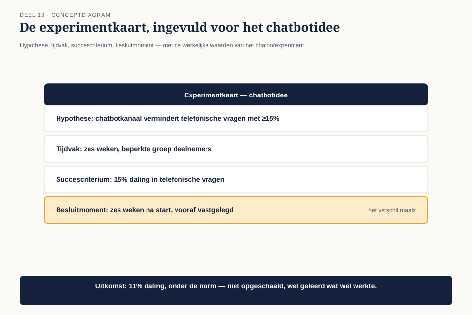

Cursus BTABoK · Niveau 2 (CITA-A) · Deel 19 van 30
Governance en roadmap
Dit is het deel waar deze cursus al sinds deel 1 naartoe werkt. Daar leerde je de BoK-tenet “bouw dingen en bezit dingen, bestuur geen dingen” — met de waarschuwing dat een architectuurgremium in een gereguleerde sector daar ongemakkelijk mee op gespannen voet kan staan. In deel 9 kreeg je een werkbaar onderscheid — kaders stellen versus ontwerpen — maar expliciet niet de definitieve oplossing.
7secties
±2udagdeel + huiswerk
4controlevragen
5figuren
Positionering. Deze cursus bereidt je voor op de Iasa-certificeringen en is uitdrukkelijk géén vervanging van het officiële examen- en cursusmateriaal van Iasa.
Niveau 2: ❶ Het engagement model → ❷ Digital Customer → ❸ Digital Business → ❹ Digital Employee en Digital Operations → ❺ Value model I → ❻ Value model II → ❼ Operating model I → ❽ Operating model II → ❾ Governance en roadmap (hier) → ❿ Architectuurvolwassenheid → (11) Specialisatiekeuze → (12) Examentraining CITA-A en portfoliobeoordeling
01
Waar dit deel over gaat
⏱ 8 min
Dit is het deel waar deze cursus al sinds deel 1 naartoe werkt. Daar leerde je de BoK-tenet “bouw dingen en bezit dingen, bestuur geen dingen” — met de waarschuwing dat een architectuurgremium in een gereguleerde sector daar ongemakkelijk mee op gespannen voet kan staan. In deel 9 kreeg je een werkbaar onderscheid — kaders stellen versus ontwerpen — maar expliciet niet de definitieve oplossing. Dit deel geeft die oplossing, en voegt er twee praktische instrumenten aan toe: de roadmap en het experiment.
Aan het eind van dit deel kun je:
uitleggen waarom architectuurgovernance moet veranderen zodra een project overgaat in een blijvend product;
een roadmap opstellen met drie horizonnen, gekoppeld aan de investeringstypen en transformatiefasen die je al kent;
een experiment opzetten voor een idee dat te onzeker is voor een gewoon besluit;
een governancemodel ontwerpen dat kaders bewaakt zonder ontwerpen over te nemen.
02
Wat gebeurt er als het programma stopt?
⏱ 8 min
Mutatieplatform loopt naar zijn einde: over twee maanden is de veertien maanden durende programmaperiode voorbij. Een vraag die niemand eerder had gesteld, komt nu met urgentie op tafel: wat gebeurt er met het architectuurgremium dat gedurende het programma is ontstaan?

Figuur 19-1 — een tijdlijn met "programma-einde" gemarkeerd, met daarna een vraagteken boven het architectuurgremium
Twee kampen vormen zich. Het ene kamp — met een verwijzing naar de BoK-tenet uit deel 1 — vindt dat het gremium moet ontbinden zodra het programma stopt: “We zijn geen bestuursorgaan, we zijn hier om dingen te bouwen. Als Mutatieplatform klaar is, is onze taak voorbij.” Het andere kamp wijst op de vijf systemen die na het programma blijven bestaan, en op de architectuur-dekkingsgraad van zestig procent uit deel 16: “Zonder doorlopende aandacht verwatert dit binnen een jaar. Wie bewaakt dan de kaders?”
Beide kampen hebben gelijk, en het probleem is dat ze het over twee verschillende dingen hebben zonder dat te beseffen.
03
Product versus project: de kern van de oplossing
⏱ 8 min
De eerste competentie legt het onderscheid bloot dat de discussie in 19.2 verwart. Mutatieplatform was een project: tijdelijk, met een begin- en einddatum, gebouwd om iets op te leveren. De vijf systemen die het oplevert, zijn een product: blijvend, zonder einddatum, en ze bestaan lang nadat het project is afgerond.

Figuur 19-2 — het project Mutatieplatform als een blok met een begin en een einde, met daaronder een pijl die doorloopt — het product, zonder eindpunt
Governance voor een project en governance voor een product zijn niet hetzelfde soort governance, en dat is waarom de discussie in 19.2 vastloopt. Projectgovernance gaat over de vraag “bouwen we het goede ding, op tijd, binnen budget” — een tijdelijke vraag die met het project verdwijnt. Productgovernance gaat over de vraag “blijft dit ding gezond, veilig en consistent” — een vraag die nooit stopt zolang het product bestaat.
Projectgovernance
Productgovernance
Duur
tijdelijk, eindigt met het project
doorlopend, geen einddatum
Vraag
bouwen we het goede ding, op tijd?
blijft het gezond, veilig, consistent?
Wat er gebeurt bij Mutatieplatform
eindigt over twee maanden — terecht
moet blijven bestaan — de vijf systemen leven door
De oplossing: het architectuurgremium ontbindt niet, maar het charter verandert. Het kamp dat “bestuur geen dingen” aanhaalt, heeft gelijk over projectgovernance — die stopt terecht. Het kamp dat waarschuwt voor verwatering, heeft gelijk over productgovernance — die moet blijven, maar in een andere, lichtere vorm dan het programmagremium dat het was.
Dit lost de spanning uit deel 1 definitief op, niet door een van de twee kanten gelijk te geven, maar door te laten zien dat ze het over verschillende tijdshorizonnen hadden
Een architect bouwt en bezit dingen tijdens het project. Een architectuurpraktijk bewaakt het product erna — een andere rol, met een ander, lichter mandaat, precies zoals kaders stellen (deel 9) lichter is dan ontwerpen.
Controlevraag
Uit Werkboek deel 19, Opdracht 1 — Product of project
1Product of projectToon antwoord
Individueel, 15 minuten
Voor drie initiatieven uit je eigen werk: is dit een project (tijdelijk, eindigt) of een product (blijvend, geen einddatum)? Voor elk product: bestaat er doorlopende governance, of is die met het oorspronkelijke project meegestopt?
Uitwerking
Geen modelantwoord. Verwacht patroon: bij de meeste deelnemers blijkt minstens één “product” (een systeem dat allang na het oorspronkelijke project bestaat) zonder duidelijke doorlopende governance — precies de situatie waarin Mutatieplatform dreigde te belanden vóór dit deel.
04
De roadmap: drie horizonnen
⏱ 8 min
De tweede competentie geeft het nieuwe, lichte productgremium een instrument om vooruit te kijken zonder in projectplanning te vervallen: de roadmap.
Figuur 19-3 — drie horizonnen naast elkaar — vastgelegd, richtinggevend, denkbaar — met afnemende zekerheid naar rechts
Het instrument: de roadmapkaart, drie horizonnen.
Horizon
Zekerheid
Wat erin staat
Koppeling
Vastgelegd
hoog — gefinancierd, gepland
verplichte en beschermende investeringen met een vaste datum
investeringsportefeuille (deel 16)
Richtinggevend
middel — waarschijnlijk, nog niet volledig uitgewerkt
renderende investeringen die aansluiten bij de volgende transformatiefase
transformatiefasen (deel 13)
Denkbaar
laag — een richting, geen belofte
optiescheppende investeringen en onderzochte experimenten
optiescheppend (deel 3, deel 16)
Een roadmap met alleen de vastgelegde horizon is eigenlijk een planning, geen roadmap — hij vertelt niets over de richting. Een roadmap met alleen de denkbare horizon is een visiedocument zonder houvast. De waarde zit in alle drie tegelijk, met een zichtbaar afnemende zekerheid — iedereen die de roadmap leest, weet meteen welk deel een belofte is en welk deel een richting.
Controlevraag
Uit Werkboek deel 19, Opdracht 2 — De roadmapkaart
1De roadmapkaartToon antwoord
In tweetallen, 25 minuten
Stel een roadmap op voor een systeem of initiatief uit je eigen werk, met de drie horizonnen (vastgelegd, richtinggevend, denkbaar). Voor elk item: welke horizon, en waarom?
Uitwerking
Geen modelantwoord. Veelgemaakte fout: bijna alle items in de vastgelegde horizon plaatsen, met een lege of dunne richtinggevende en denkbare horizon. Dat wijst op een planning die zich voordoet als roadmap — precies de valkuil uit 19.4.
05
Experimenten: een derde weg naast wel of niet besluiten
⏱ 8 min
De derde competentie geeft een antwoord op een probleem dat al in deel 13 opdook: het chatbotvoorstel van Team Communicatie werd toen vastgelegd met een heroverwegingsmoment (“zodra het programma de uitbreidingsfase bereikt”), maar niet uitgevoerd. Dat moment is nu aangebroken, en de vraag is hoe je een idee met een onzekere uitkomst behandelt zonder het meteen als volwaardig project te starten.

Figuur 19-4 — een experimentkaart — hypothese, tijdvak, succescriterium, besluitmoment — toegepast op het chatbotidee
Het instrument: de experimentkaart. Vier velden:
Veld
Inhoud
Bij het chatbotidee
Hypothese
wat we denken dat waar is, toetsbaar
“Een chatbotkanaal vermindert het aantal telefonische vragen over eenvoudige simulatiegevallen met minstens 15%”
Tijdvak
een vast, kort venster
zes weken, met een beperkte groep deelnemers
Succescriterium
het getal dat de hypothese bevestigt of weerlegt
15% daling in telefonische vragen over de doelgroep
Besluitmoment
een vaste datum waarop wordt beslist: opschalen, aanpassen, of stoppen
zes weken na start, vastgelegd vóór het experiment begint
Waarom dit anders is dan een gewoon project: een experiment heeft vanaf het begin een expliciet stoppunt en een vooraf afgesproken criterium om te stoppen. Dat voorkomt het patroon waarbij een idee eenmaal gestart, moeilijk meer te stoppen is omdat er al in is geïnvesteerd — dezelfde valkuil als bij technische schuld die nooit wordt afgelost (deel 16).
De uitkomst van het chatbotexperiment: een daling van elf procent, onder de vooraf afgesproken vijftien procent. Het experiment wordt niet opgeschaald, maar ook niet als mislukking behandeld — het besluitenlogboek legt vast wat wél is geleerd (welk deel van de vragen zich wél leende voor een chatbot) voor een mogelijke volgende poging.
Controlevraag
Uit Werkboek deel 19, Opdracht 3 — De experimentkaart
1De experimentkaartToon antwoord
Individueel, 20 minuten
Kies een idee uit je eigen werk dat “goed zou kunnen zijn, maar niemand weet het zeker.” Vul de experimentkaart in: hypothese, tijdvak, succescriterium, besluitmoment.
Uitwerking
Geen modelantwoord. Verwacht resultaat: het succescriterium is bij de eerste poging vaak nog te vaag (“het moet beter gaan voelen” in plaats van een getal). Duw door naar een concreet, meetbaar criterium — dezelfde discipline als de sfeerbeeld-naar-getal-oefening uit deel 8.
06
Het nieuwe governancemodel
⏱ 8 min
Claudette stelt, met de drie voorgaande competenties, een licht charter voor het architectuurgremium na Mutatieplatform voor:
Figuur 19-5 — het nieuwe charter als één pagina — frequentie, wat het gremium wel doet, wat het niet doet, gekoppeld aan bestaande ritmes
Frequentie: één keer per kwartaal, gekoppeld aan hetzelfde ritme als de klantreiskaart (deel 12) en de stakeholderkaart (deel 17) — één terugkerend moment, geen aparte kalenderafspraak.
Wat het gremium wel doet: de roadmap bijwerken, de architectuur-dekkingsgraad (deel 16) beoordelen, en beslissen over experimenten die de denkbare horizon binnenkomen.
Wat het gremium niet doet: individuele ontwerpkeuzes goedkeuren — dat blijft, zoals in deel 9 al vastgesteld, bij de teams.
Dit charter overtuigt beide kampen uit 19.2: het is geen permanent programmagremium dat blijft ontwerpen (het kamp dat “bestuur geen dingen” citeerde krijgt gelijk), en het laat de vijf systemen niet zonder toezicht achter (het andere kamp krijgt ook gelijk).
Controlevraag
Uit Werkboek deel 19, Opdracht 4 — Het lichte charter
1Het lichte charterToon antwoord
In groepen van drie tot vier, 25 minuten
Ontwerp, naar het voorbeeld van 19.6, een licht governancecharter voor een architectuurfunctie in jullie eigen organisatie: frequentie, wat het orgaan wel doet, wat het niet doet.
Uitwerking
Geen modelantwoord; beoordelingscriteria:
Criterium
Voldoet als
Frequentie concreet
een vast, terugkerend moment, bij voorkeur gekoppeld aan een bestaand ritme in plaats van een nieuwe afspraak
“Wel” en “niet” beide expliciet
het charter zegt niet alleen wat het orgaan doet, maar ook expliciet wat het NIET doet — anders schuift het vanzelf terug naar ontwerpen
Geen goedkeuringsfunctie voor individuele ontwerpen
consistent met kaders-versus-ontwerp uit deel 9
07
Kernbegrippen
⏱ 8 min
Begrip
Betekenis in deze cursus
Product versus project
een project is tijdelijk en eindigt; het product dat het oplevert, blijft bestaan en heeft een andere, lichtere, doorlopende governance nodig
Roadmapkaart
drie horizonnen — vastgelegd, richtinggevend, denkbaar — met afnemende zekerheid, gekoppeld aan investeringstypen en transformatiefasen
Experimentkaart
hypothese, tijdvak, succescriterium, besluitmoment — vooraf afgesproken, zodat een idee met een onzekere uitkomst niet stilzwijgend permanent wordt
Het definitieve governancemodel
een licht, kwartaalgebonden gremium dat kaders en roadmap bewaakt, nooit ontwerpt
Verder naar deel 20
Deel 20 — Architectuurvolwassenheid — bouwt voort op wat hier is behandeld.